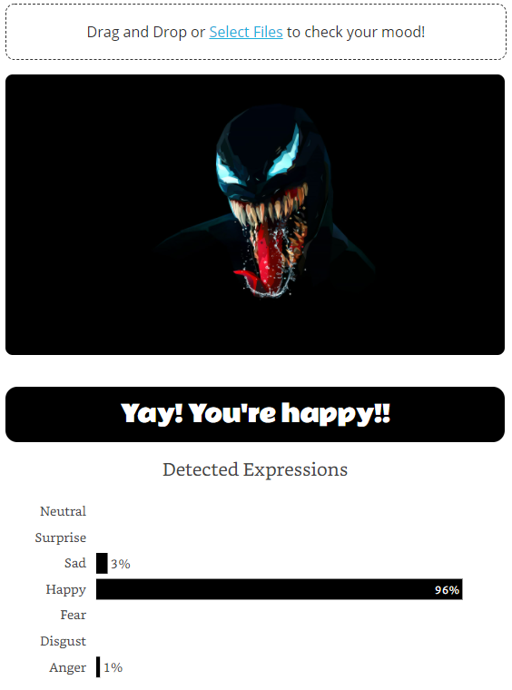

Moodie | A Dash Application
A fun weekend project of deploying my first CNN based model in production using heroku. This is how it looks like Link to Moodie App
Moodie was a weekend project to deploy a TensorFlow based model in production.
The model was tasked to predict the facial expression given an input image. The output is one of seven facial expressions from /Happy, Sad, Disgust, Afraid, Surprise, Neutral/. The app is designed to take one or multiple images and throw out predictions for each image separately, along with a graph on what other expressions were probable. I deployed this model on heroku by creating a Dash Application.
Let’s dive deep!
The Ingredients
To create and deploy this kind of we needed 4 things
Dash by Plotly (Frontend & Backend)
Dash is an open Source library released by Plotly to build web apps with ease. It takes care of both front end and back-end and lets you focus on the core of your UI, your app.
Heroku (Server)
Heroku is a cloud platform as a service that lets you build and deploy web apps. It has both free and paid subscriptions to test our your apps and deploy full scale.
TensorFlow
TensorFlow is an end to end open source machine learning platform. It has an ecosystem of all the tools you’ll need to build and deploy a machine learning model at scale.
Git
Git is a version control system used for tracking changes in the code. This is required to run commands to deploy the app in heroku.
Making the Moodie Stew
To create this app, the following steps were followed
- Train a CNN on facial expression data and generate a compatible model file
- Write a python script that takes image as user input, converts into tensorflow readable format and scores the image to get predictions on the facial expression
- Package the steps in app.py file and deploying it on Heroku
I have used Anaconda to manage all open source package installations
Virtual Environment
A virtual environment is a python environment with python and other scripts installed that are isolated from already installed packages in the default location. The max size of the app cannot be more than 500 MB for it to be deployed on Heroku. This will come handy when specifying requirements of installed packages and versions for the app
The virtual environment can be created with the following command. TensorFlow is stable for python 3.7, so we specified that in the create command. Once created we can activate the environment using conda activate. To learn more about virtual environments, check out the official documentation
conda create —-name moodie python=3.7 Conda activate moodie
Installing Packages
Using the anaconda prompt we can install the following packages one by one. Note that we are only installing tensorflow-cpu just to ensure that our app size remains within 500MB. Since our model takes input one at a time and there is no complex processing of image, we can use tensorflow-cpu.
We will also need Python Imaging Library to manipulate images and pass it to the pre-trained model.
pip install dash pip install tensorflow-cpu pip install Pillow
App.py
This is the heart of the app. App.py file will determine how your app looks and what functions it performs. To create this app, I just need 2 things
- Upload button - A mechanism to upload or take a picture
- Output Area - where the image will be displayed & predictions will be made. The output area also contains a bar graph of all probable emotions and their modelled probabilities.
Let's first initialize the app. We will need the following libraries to be imported
# basic import base64 import io import numpy as np # dash import dash import dash_core_components as dcc import dash_html_components as html from dash.dependencies import Input, Output, State import plotly.graph_objs as go # tensorflow & keras import tensorflow as tf from tensorflow.keras.models import load_model from tensorflow.keras.preprocessing import image from PIL import Image app = dash.Dash(__name__) server = app.server app.title = 'Moodie | Sumit Kant' app.layout = html.Div([ html.H1('Moodie') ]) if __name__ == '__main__': app.run_server(debug=False)
Dash provides a ready made script for uploading images using dcc.Upload. For a mobile device, the upload button also adds ‘click a picture’ feature using the on-device camera.
Notice that when you try to upload an image, it serialises the string into a string which is then parsed to display the image. This can become a bottleneck when the image size is large. They may take longer time to upload and serialise and may not show any output because of the timeout. The way to increase the timeout is tricky, so i haven't explored it yet.
dcc.Upload( id='upload-image', children=html.Div([ 'Drag and Drop or ', html.A('Select Files'), ' to check your mood!' ]), multiple=True, max_size = -1 )
Next, we parse the serialised image into recognisable format (jpg) and manipulate this using the `pillow` package. What we need from the image is to be gray scale (or 1 channel) and all the pixel values to be normalised which is just dividing the image object by 255.
Next we call predict method on the image which through out list of probabilities which are mapped to “crafted replies”. These replies will be displayed at the bottom of the image
Next we just call a go object that takes expressions as string and probabilities as values and prepares the chart. Putting it all together will give us this final code
# basic import base64 import io import numpy as np # dash import dash import dash_core_components as dcc import dash_html_components as html from dash.dependencies import Input, Output, State import plotly.graph_objs as go # tensorflow & keras import tensorflow as tf from tensorflow.keras.models import load_model from tensorflow.keras.preprocessing import image from PIL import Image app = dash.Dash(__name__) server = app.server model = load_model('trained_model/model_filter.h5') app.title = 'Moodie | Sumit Kant' app.layout = html.Div([ html.H1('Moodie'), html.Div(id = 'subtext', children = [ html.P('Moodie is a fun weekend deep learning project that is designed to detect facial expressions from an image. The predictions are powered by a trained CNN model in keras using TensorFlow as backend. So go crazy and use any image of your liking...'), html.P('P.S: None of your images are saved anywhere... :)'), html.P('P.P.S: The CNN is not trained to detect whether the face exists or not, the assumption here is that an image of a face is uploaded and one of the 7 expression will dominate the prediction') ] ), dcc.Upload( id='upload-image', children=html.Div([ 'Drag and Drop or ', html.A('Select Files'), ' to check your mood!' ]), style={ 'width': '100%', 'lineHeight': '60px', 'borderWidth': '1px', 'borderStyle': 'dashed', 'borderRadius': '10px', 'textAlign': 'center', }, # Allow multiple files to be uploaded multiple=True, max_size = -1 ), # dcc.Upload dcc.Loading( id="upload-image-loading", children = [html.Div(id='output-image-upload')], type='dot', color = 'black' ), html.Div('© Copyright 2020 | Sumit Kant', id='copyright') ]) def parse_contents(contents, filename): content_type, content_string = contents.split(',') decoded = base64.b64decode(content_string) fh = open("imageToSave.jpg", "wb") fh.write(decoded) fh.close() img = image.load_img('imageToSave.jpg', color_mode='grayscale', target_size=(48, 48)) x = image.img_to_array(img) x = np.expand_dims(x, axis = 0) x /= 255 pred = model.predict(x) values = [int(round(x*100,0)) for x in pred[0]] labels = ['Anger','Disgust','Fear','Happy','Sad','Surprise','Neutral'] objects = [ 'Angry? or Hangry?', 'Disgusted? Huh?', 'Afraid? Don\'t be...', 'Yay! You\'re happy!!', 'Why so sad?', 'Surprised!!!', 'Neutral? #NoNeutrals' ] return html.Div([ # html.H5(filename), # HTML images accept base64 encoded strings in the same format # that is supplied by the upload html.Img(src=contents), html.H4(objects[pred.argmax()]), html.Div([ dcc.Graph( id = 'bar_chart', figure = { 'data': [go.Bar( y = labels, x = values, textposition ='auto', text = [str(v)+'%' for v in values], marker_color = ['black']*len(labels), hoverinfo ='skip', orientation = 'h', )], 'layout': go.Layout( xaxis = {'showgrid': False, 'ticks' : '', 'showticklabels' :False, 'zeroline': False}, yaxis = {'showgrid': False, 'ticks' : '', 'zeroline': False}, font = {'family' : 'Lora', 'size' : 14}, margin = {'pad' : 10, 'l':100, 'r':25, 't':50, 'b':50}, title = 'Detected Expressions', height=300, ) }, config = { 'displayModeBar': False } )]), ]) @app.callback(Output('output-image-upload', 'children'), [Input('upload-image', 'contents')], [State('upload-image', 'filename')]) def update_output(list_of_contents, list_of_names): if list_of_contents is not None: children = [ parse_contents(c, n) for c, n in zip(list_of_contents, list_of_names)] return children if __name__ == '__main__': app.run_server(debug=False)
Deployment errands
Once we are at the stage when we are satisfied with our code. We will now use git to run heroku commands.
For deploying a dash application on Heroku, the documentation given by plotly is clear enough. If you are deploying your Dash app on Heroku, just replace the code in the documentation with your app.py code and follow along as described.
Results
This app yeilded some interesting results. For example, even Venom was looking happy in this image.
See for yourself - Link to Web App
